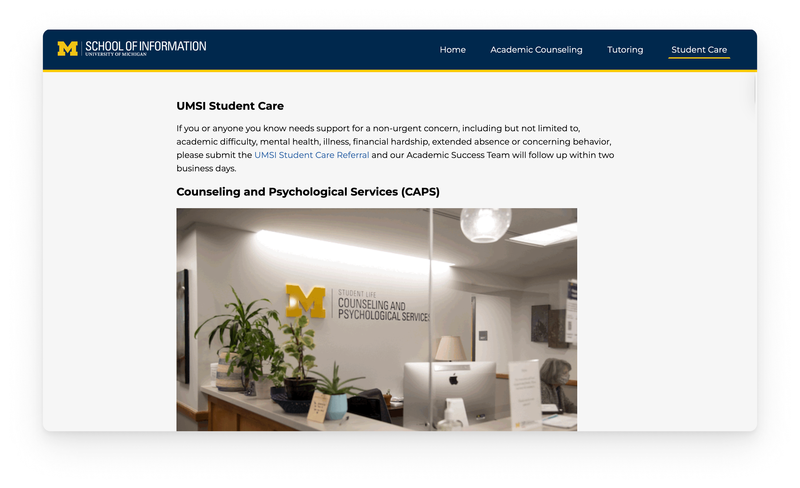
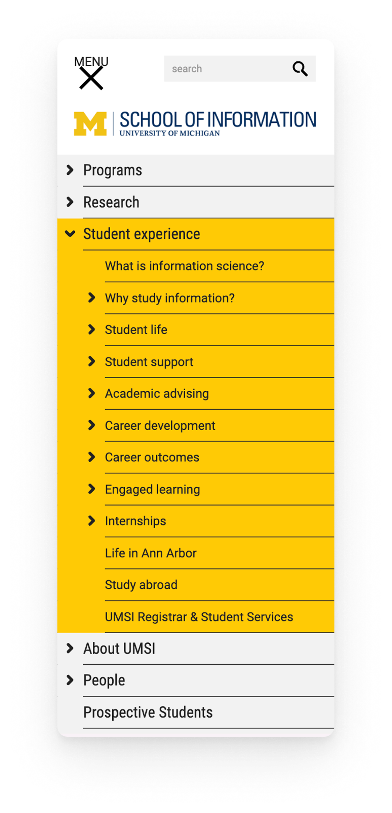

Project Overview
Title: UMSI Academic Success Portal Redesign
Design Challenge: Improve UMSI's Student Success Team's web presence by optimizing their current website, focusing on accessibility and responsive design.
Team & Timeline: This was a solo project; January 20th, 2025 - March 30th, 2025
Role: Web/UX Designer
Industry: Product Design
Tools: Visual Studio Code, HTML, & CSS
Table of Contents
The Current Academic Success Portal

The Student Success Team's current website has a lot of information and various different links, which may prove to cause decision paralysis for some students.

The overwhelming amount of navigation links can also be quite confusing for the student (especially in the mobile view), inhibiting them from finding the information and resources they need.
Project Purpose
The UMSI Student Success team sought to improve its web presence by designing a new website to better help students understand and locate resources available to them. The new site should feature an accessible and responsive design that works on multiple devices, a modern look and feel, and a refreshed site architecture and site content. The target user of this website is an undergraduate student taking classes at UMSI BSI.
Client's Objectives
- Create an updated website for Student Support Resources to better help students find and utilize resources available to them on campus to help them:
- Be more successful academically
- Achieve better school/life balance
- Find resources in times of crisis
- Update and enhance the site's design and information architecture to make it easy to find resources and understand how to utilize them.
- Organize and refine content to compete with peer institutions and emphasize the Michigan Difference
- Optimize site content and images for different screen sizes
- Ensure that the site is fully accessible and usable for all students - including those with different disabilities
- Have a visually appealing modern looking website that fits within UM's Branding Guidelines
Heuristic Evaluation
I decided to conduct a heuristic evaluation for this project for quick, broad issue detection on the current website's interface, having to optimize both mobile and desktop view.
Visibility of System States
Current Website

There are identifiers when you navigate to each page, showing the user which page they have navigated to. For example, there is a breadcrumb area (i.e. Home > Student Experience). However, because each tab in the secondary navigation bar is a different color, it may take a user a bit longer to realize that when a tab is yellow it means that is the current page they're on (the page header can make up for this, though, since they match the tab titles.) The navigation links in the uppermost navigation bar also lack a hover state.
How I Addressed It


In my redesign, I decided to not only lessen the amount of navigation links in the navigation bar, but also make sure there is a clear and simple page identifier. I also made sure to add in a clear hover state for the links in the navigation bar.
Match between system and the real world
Current Website

Each label used in the navigation and as headers on each page uses familiar language; UMSI students would be the users visiting this page, and there is nothing out of the ordinary that would be difficult to understand. However, the placement of the primary navigation bar may be overlooked by some users. I do agree that it should be placed before the secondary navigation bar for a more logical order, but it should be placed a bit lower.
How I Addressed It
Because my redesign was meant to focus on just undergrad UMSI students, the website would have more specified information, so I decided I could completely eliminate the use of 2 navigation bars.
User control and freedom
Current Website
If a user travels to a page accidentally, or if they realize that it's not the page they wanted to navigate to, the breadcrumb feature I mentioned earlier is very useful to go back (i.e. Home > Program > Bachelor of Science in Information) and this can act as the user's “emergency exit.”
This feature can also pertain to error prevention, recognition rather than recall, error recognition and recovery, and help and documentation, as it allows users to see the path they have taken to reach their current page.
How I Addressed It
The navigation bars, however, are not fixed, so if a user scrolls down the page and then realizes they are on the same page, they'd have to scroll all the way back up, which may cause some accessibility issues for users with mobility constraints like arthritis.
Maintain consistency and standards
Current Website
The website does a good job of keeping the layout consistent throughout each page, so I made sure to keep that aspect for my redesign.
Flexibility and efficiency of use
Current Website
The site has a search engine which will help newer users find the information they are looking for quicker, and more familiar users will know which tabs and links to navigate to in order to find the information they are looking for.
How I Addressed It
Because I lessened the amount of information in this redesign, I did not think a search engine was necessary and there is clear and simplified information on each page.
Aesthetic and minimalist design
Current Website
There was a lot of clutter on the site, mainly because of the amount of navigation links, which I believe takes away from the minimalistic and aesthetic feel of the website, which is something that the client expressed they wanted the website to have.
How I Addressed It
I decided to take advantage of the fact that this redesign was meant to target only undergraduate UMSI students and I was able to minimize the amount of information on the screen, which gave it a way cleaner look. Minimizing the navigation contributed to the betterment of the minimalistic and aesthetic feel of the website.